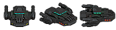
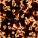

Your browser does not support HTML5 Canvas. Please shift to a newer browser.


Your browser does not support HTML5 Audio. Please shift to a newer browser.
Your browser does not support HTML5 Audio. Please shift to a newer browser.